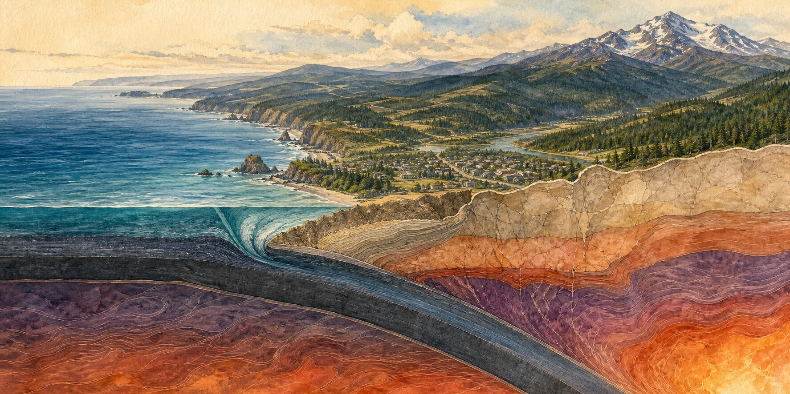
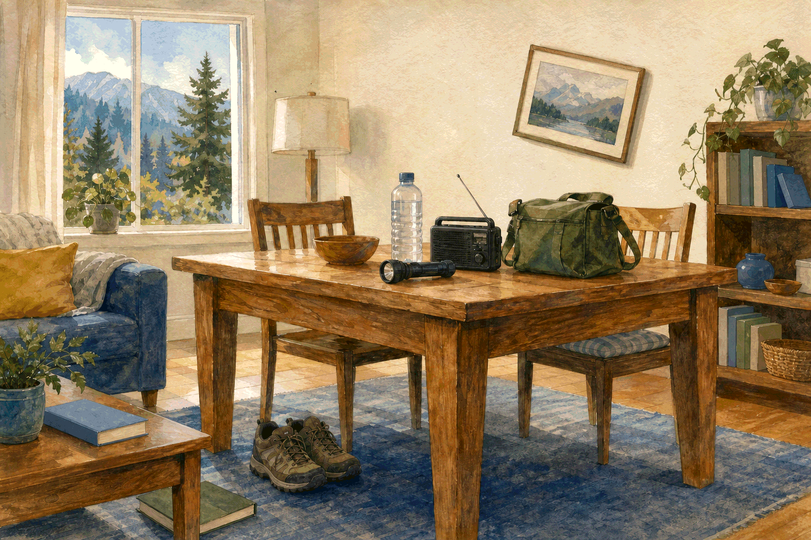
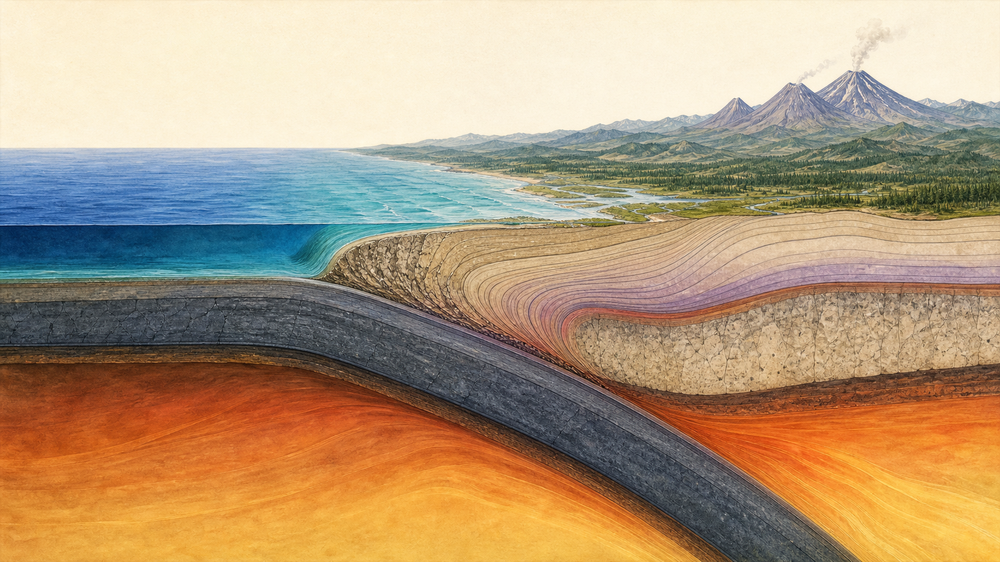

Chapter one · Earthquake
Earthquake
Offshore, from Cape Mendocino to Vancouver Island, one piece of the earth bends beneath another. Most days that boundary is invisible from the forests, ferry decks, river valleys, and coastal towns above it.
A guide for northern California, Oregon, Washington, and southern British Columbia · Reviewed July 12, 2026
If the ground is moving nowImmediate reference
If the ground is moving now.
-
Drop
Get onto your hands and knees before the shaking knocks you down.
-
Cover
Protect your head and neck under a sturdy table or desk if one is within reach.
-
Hold On
Hold your shelter—or your head and neck—until the shaking stops.
Adapt for your body: if applicable, lock wheelchair or walker wheels; bend or brace, cover your head and neck, and hold on. If you are in bed, stay there and protect your head and neck with a pillow.
In a mapped tsunami hazard zone: strong or long shaking is a natural warning. As soon as you can move safely, follow the posted route inland or uphill. Do not wait for a phone alert or siren.
The coast above a quiet boundary
The ground beneath the familiar.
Cascadia shows its geology everywhere: in the volcanic skyline, the steep coast, the broad river valleys, and the islands left between water and mountain. The largest fault in the region is harder to see. It lies mostly offshore, beneath an ocean that can look completely ordinary from the beach.
A full-margin Cascadia rupture is not the only earthquake that belongs to this place. Shallow faults cross parts of the continent. Deep earthquakes occur within the descending plate. The offshore plate boundary can rupture along hundreds of miles. You do not need to identify which kind has begun while the room is moving. The useful first response is the same: protect the body you are in.
What happens afterward is more local. A person in an inland wood-frame home, someone in an older masonry building, and a visitor inside a coastal evacuation zone may face very different first decisions. Distance matters. The ground beneath the building matters. Construction matters. At the coast and along other mapped tsunami shorelines, the route matters.
A household rehearsal
An ordinary room, interrupted.
Composite household: Leah, Sam, and Roy are fictional, but the room, mobility needs, and actions are drawn from regional housing and established earthquake guidance.
Leah works at the dining table in a rented house above a western Washington river valley. Her partner, Sam, crosses a bridge to work. Leah’s father, Roy, shares the house and uses a walker. The arrangement is ordinary enough that most of it goes unnoticed: shoes beneath the table, a flashlight in the same drawer every time, a radio beside a water bottle, one small bag where nobody has to search for it.
Their plan is not elaborate. They have practiced getting low and protecting their heads. They chose an out-of-area contact and two meeting places, neither of which depends on remembering a password. Roy’s walker has brakes he can lock. Sam knows that one short text is more useful than repeated calls. They have not solved every problem, and the supplies have grown slowly.
When the room begins to move, the first change is almost quiet: the picture above the table tilts, the books lean, and the trees through the window seem to blur. Then the floor rolls. Leah drops beneath the table and holds a leg. Roy locks the walker, braces beside it, and covers his head and neck. Neither waits to understand what kind of earthquake this is.

When the shaking stops, the house is missing its usual electrical hum. Leah puts on the shoes before crossing the room, checks Roy, and keeps the table close when an aftershock starts. The picture is crooked and a few things have fallen, but the first questions are about people, fire, the building, and whether they need to move.
They smell no gas, hear no hissing, and see no broken line, so they leave the main valve alone. Leah sends one short message to Sam and their out-of-area contact. She does not know whether the bridge is open or whether the tap water will remain usable. The plan cannot answer those questions. It simply keeps her from inventing every next step at once.
Roy’s agreement with a neighbor is equally modest: each will check the other when it is safe to do so. That promise is not a rescue plan and it does not require either person to enter a damaged building. It is one more piece of ordinary life that can continue after the room has changed.
Preparation did not hold the house still. It gave this household a known place to protect themselves, something safe to put on their feet, one person to message, and a little more attention to spare for what came next.
The boundary beneath Cascadia
A coast slowly changing shape.
From northern California to Vancouver Island, the Juan de Fuca plate system—including the related Gorda and Explorer plates—descends beneath North America. Along the shallow offshore interface, parts of that boundary can lock even as the plates continue to converge. The edge of the continent slowly deforms under the strain.

When a locked section releases, the motion can involve a very large area. Shaking may last much longer than it does in the region’s more familiar moderate earthquakes. If the seafloor moves vertically, it can also displace the water above it and generate a tsunami.
The last great Cascadia earthquake occurred on January 26, 1700 and is estimated at magnitude 8.7–9.2. Its history is held in several kinds of evidence: the Huu-ay-aht oral history of tsunamis in the Pachena Bay area, coastal land-level change, tsunami and sediment deposits, tree-ring dating, and written records of the tsunami that reached Japan.
A 2025 USGS fact sheet estimates a 10–15% chance of an approximately magnitude-9 full-margin rupture in the next 50 years, depending on the model. That is not the probability of every damaging earthquake in the region; partial-margin, deep, and crustal events have different histories and estimates. A probability is a planning horizon, not a countdown. The word “overdue” does not describe how the fault works.
Why place changes the experience
The same earthquake does not arrive everywhere the same way.
Distance from the rupture is only one part of shaking. Soft sediment can amplify seismic waves, so a basin, delta, or filled shoreline may move differently from nearby rock. Loose, water-saturated ground can also lose strength through liquefaction. Amplification and liquefaction are related to local geology, but they are not the same effect.
That distinction matters in a region where cities and towns meet river deltas, reclaimed tideflats, steep slopes, and old shorelines. Parts of Seattle, Portland, Vancouver, and many smaller communities sit on ground that changes how waves travel. Construction adds another layer. An older unreinforced masonry building, a retrofitted structure, and a newer code-conforming building may respond very differently on the same block.
The practical question is not simply, “Do I live in Cascadia?” It is, “What is beneath the places where I sleep, work, learn, or help someone else?” Start with the official map for your location: the Washington DNR Geology Portal, Oregon HazVu, California Geological Survey, or Earthquakes Canada. A map is a starting point; building-specific questions belong with qualified local professionals and the authority responsible for the property.
In a mapped tsunami hazard zone, the route comes first.
Natural tsunami warnings include strong or long shaking, a sudden rise or fall of the water, and a loud ocean roar. Follow the local evacuation map as soon as you can move safely. Some outer-coast communities may have only minutes. Do not wait to collect supplies, reunite the household, receive a phone alert, or seek outside confirmation.
The relevant map may extend beyond an ocean beach. Strait, Salish Sea, Puget Sound, and some large-lake shorelines have their own mapped zones and routes. Residents, workers, and visitors should use the route posted for that place. If walking, mobility, caregiving, or transportation requires help, make that arrangement with local emergency planners, a workplace, lodging staff, or trusted people before it is needed.
Before the room moves
Make the first useful actions easier.
Begin with the room, not the shopping list.
Practice Drop, Cover, and Hold On where life actually happens: beside the bed, at a desk, in a classroom, near a mobility device, and anywhere a sturdy table is within reach. Secure tall furniture and the water heater, latch cabinets where practical, and move heavy objects lower. Keep shoes and a light where they can be reached without crossing broken glass.
Renters may not control structural work, but they can still choose safer positions, rearrange heavy objects, use non-destructive restraints where allowed, and put repair or anchoring requests in writing. Owners can ask local building departments or qualified professionals about the foundation, chimney, masonry, and retrofit programs. No single purchase makes a room ready.
Protect what cannot safely wait.
Regional agencies use different minimum supply targets, but all expect that normal water, power, roads, pharmacies, and waste systems may be interrupted. Begin with several days, then add capacity toward one or two weeks where local guidance recommends it. For water, a common planning amount is about one gallon or four litres per person per day.
Water is only the beginning. Ask what in the household depends on refrigeration, electricity, daily medication, mobility equipment, a particular food, an animal’s care, or another person arriving on time. Make room for sanitation and for safe light. Generators, camp stoves, grills, and other fuel-burning equipment stay outdoors and well away from windows, doors, and vents; a working carbon-monoxide alarm belongs in the plan.
Plan around people and crossings.
Choose an out-of-area contact and a nearby meeting place that does not assume every bridge, ferry, road, or transit line will be open. In a tsunami zone, the evacuation route overrides the reunion plan. Decide who will send the short status message, who may need help leaving, where animals fit, and which neighbor checks are safe for everyone involved.
A useful plan does not pretend every household has a car, spare money, storage space, physical strength, home ownership, or a flexible workday. Begin with the constraint that has the least room for error and build from there.
Room for one another
A plan does not make a household invulnerable.
It cannot keep the floor still, guarantee an open bridge, or tell you exactly what the tap will do. It can take a few decisions out of the first minutes. It can put light, water, medication, a route, and a familiar voice within reach.
None of that is heroic, and none of it requires performing an ideal version of preparedness. It is ordinary care arranged ahead of time. When fewer decisions have to be invented under pressure, a household has a little more attention for a child, an older neighbor, an animal, or the person who has not made it home yet.
Keep this part close
Earthquake quick reference.
Local instructions, tsunami maps, utility procedures, and building conditions override this regional summary.
While it is shaking
- Drop, Cover, and Hold On. Protect your head and neck.
- Inside, stay inside. Do not run outside or stand in a doorway.
- In bed, stay there and use a pillow. With a wheelchair or walker, lock wheels if applicable, bend or brace, cover, and hold.
- Outside, move to a clear area if you can do so safely. Driving, pull over away from bridges, overpasses, trees, signs, and wires; set the brake and remain in the vehicle.
When it stops
- In a mapped tsunami hazard zone, follow the local route inland or uphill immediately after strong or long shaking.
- Expect aftershocks and protect yourself again when they begin.
- Check people, put on sturdy shoes if available, and move away from fire, damaged buildings, masonry, glass, and downed lines.
- If a gas leak is suspected, leave the area, avoid flames and switches, and call the utility or emergency services from safety. Shut the exterior main only if local guidance says to and it can be reached safely; a professional restores service.
- Use stored water first. If damage is suspected or officials advise it, stop flushing until the water and sewer systems are cleared.
- Send a short status text, monitor official local channels, and reserve 911 for serious or life-threatening emergencies.
Ahead of time
- Practice protective actions and adapt them for beds, mobility devices, work, school, and caregiving.
- Secure what can fall and ask about building-specific retrofit needs.
- Learn the official ground-hazard and tsunami maps for the places you use.
- Build water, food, medication, sanitation, lighting, backup power, and animal supplies over time.
- Choose contacts, meeting places, routes, and neighbor arrangements that fit the household you have.
Notes and sources
Where this chapter is grounded.
This chapter combines public earthquake science with official protective-action and preparedness guidance. During an event, follow the authority responsible for your location.
Reviewed July 12, 2026
Science and warning
- USGS: Earthquake probabilities and hazards in the U.S. Pacific Northwest
- USGS: Can earthquakes be predicted?
- USGS: Earthquake early warning
- Earthquakes Canada: Early-warning questions and limits
- U.S. Tsunami Warning Centers: Natural warnings and evacuation
- Earthquake Country Alliance: Drop, Cover, and Hold On adaptations